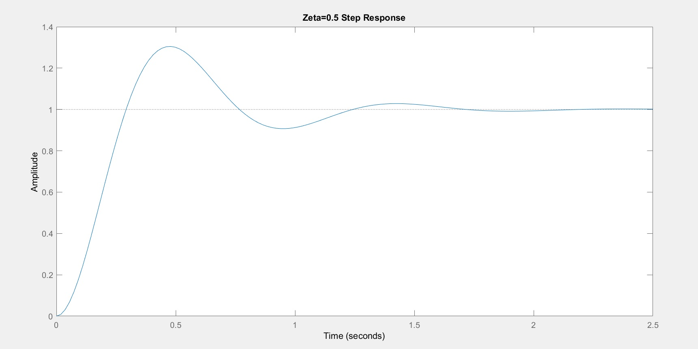
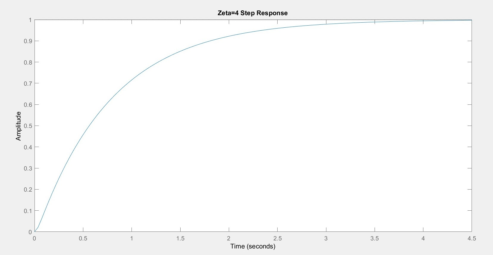

T(s)=(100)÷(s2+20ξ+100)
Results
These are the plots generated by running the simulations
| Condition | Plots |
|---|---|
| When ξ = 0.1 |  |
| When ξ = 0.5 |  |
| When ξ = 1 |  |
| When ξ = 4 |  |
| When ξ = 8 |  |
| All the plots in one window (as per the code) |